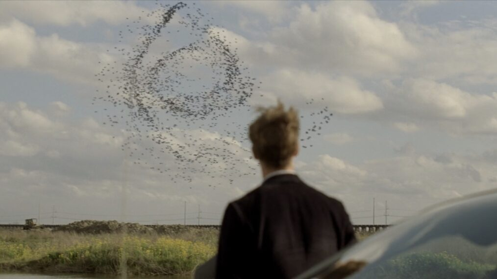

Top 10 TV Series
THIS IS JUST MY RECOMMENDATION
#1

True Detective | 8.9
Creators : Nic Pizzolatto Issa López
1S | Psychological Thriller
In the first season of True Detective, two detectives, Rust Cohle and Martin Hart, investigate a gruesome ritual murder in Louisiana, uncovering decades of secrets, corruption, and personal demons, while the haunting atmosphere, brilliant writing, and stellar performances by McConaughey and Harrelson make this season a masterpiece—so I recommend watching only this one.

#2
Better Call Saul | 9.0
Creators: Vince Gilligan Peter Gould
63 Episodes | Drug Crime
In Better Call Saul, Jimmy McGill, a small-time lawyer with a talent for persuasion, fights to build his career while struggling with his moral compass, complicated family dynamics, and the lure of the criminal underworld, eventually transforming into the slick and morally flexible Saul Goodman against the backdrop of legal battles, personal betrayals, and the growing influence of dangerous cartel figures.

#3
Chernobyl | 9.3
Creator: Craig Mazin
5 Episodes | Docudrama
In Chernobyl, the story unfolds around one of the worst man-made disasters in history—the 1986 explosion at the Chernobyl Nuclear Power Plant—where Soviet scientists, liquidators, and officials struggle to comprehend the scale of the tragedy, combat its devastating consequences, and conceal the truth, while the tense atmosphere, historical accuracy, and powerful performances create a hauntingly realistic portrayal of the catastrophe and its horrifying aftermath.
#4
Sons of Anarchy | 8.5
Creator: Kurt Sutter
92 Episodes | Crime
In Sons of Anarchy, an outlaw motorcycle club in the town of Charming navigates a dangerous world of crime, brotherhood, and power struggles, as Jax Teller, the club's vice president, grapples with his loyalty to the club, his father's legacy, and his desire for a better future, all while facing brutal rivalries, law enforcement pressure, and the ever-growing consequences of a violent life.

#5
Breaking Bad | 9.5
Creator: Vince Gilligan
62 Episodes | Drug Crime
In Breaking Bad, the life of ordinary chemistry teacher Walter White takes a dramatic turn after a terminal cancer diagnosis, leading him to use his scientific expertise to manufacture methamphetamine, pulling his former student Jesse Pinkman into the dangerous drug trade—a decision that spirals into a ruthless struggle for power, a constant battle between family and crime, and the inevitable consequences of his ambition.

#6
Band of Brothers | 9.4
Director: Tom Hanks
10 Episodes | Drama
In Band of Brothers, the story follows Easy Company, a unit of the 506th Parachute Infantry Regiment, from their intense training at Camp Toccoa through the harrowing battles of World War II, including D-Day, Operation Market Garden, and the Battle of the Bulge, as they endure the horrors of war, forge unbreakable bonds, and showcase extraordinary bravery in the fight for survival and victory.

#7
Sherlock | 9.1
Creators: Mark Gatiss Steven Moffat
15 Episodes | Crime
In Sherlock, the brilliant yet eccentric detective Sherlock Holmes, alongside his loyal friend and partner Dr. John Watson, solves complex crimes in modern-day London, using his razor-sharp intellect, keen observational skills, and unconventional methods, while facing dangerous criminals, personal challenges, and his ultimate rival—Jim Moriarty—in a thrilling reimagining of Arthur Conan Doyle’s classic stories.

#8
BoJack Horseman | 8.9
Creator: Raphael Bob-Waksberg
77 Episodes | Dark Comedy
In BoJack Horseman, a washed-up sitcom star from the '90s, BoJack, struggles with depression, addiction, and his fading relevance in a world where humans and anthropomorphic animals coexist, as he navigates failed relationships, self-destructive habits, and the search for meaning in Hollywood, all wrapped in a darkly comedic yet deeply emotional exploration of fame, regret, and personal redemption.
#9
The Sopranos | 9.2
Creator: David Chase
86 Episodes | Gangster
In The Sopranos, mob boss Tony Soprano struggles to balance the demands of his crime family with the challenges of his personal life, navigating power struggles, betrayals, and deep-seated anxiety, while seeking therapy to cope with the pressures of leadership, family dysfunction, and the ever-present threat of violence in a groundbreaking exploration of the modern mafia and the human psyche.

#10
Prison Break | 8.3
Creator: Paul T. Scheuring
90 Episodes | Prison Drama
In Prison Break Season 1, engineer Michael Scofield deliberately gets himself imprisoned in Fox River to save his brother Lincoln, who has been wrongfully sentenced to death, using his brilliant mind, a tattooed escape plan, and the help of dangerous allies, while the tension, intricate plot, and unforgettable atmosphere made this season legendary, so I recommend watching only this one.